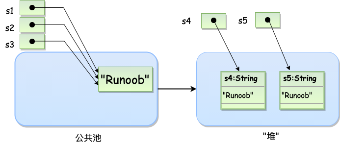
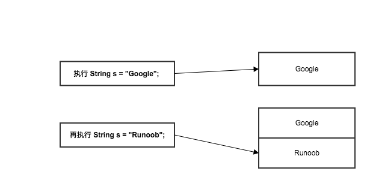

Java String Class
Strings are widely used in Java programming. In Java, strings are objects. Java provides the String class to create and manipulate strings.
Creating Strings
The simplest way to create a string is as follows:
When a string constant is encountered in code, the value here is "Runoob", the compiler will use that value to create a String object.
Like other objects, you can use the keyword and constructor methods to create String objects.
Creating strings with constructors:
Strings created with String are stored in the public pool, while string objects created with new are on the heap:

The String class has 11 constructors. These methods provide different parameters to initialize strings, for example, providing a character array parameter:
StringDemo.java file code:
The compilation and execution result of the above example is as follows:
runoob
Note:The String class is immutable, so once you create a String object, its value cannot be changed (see the analysis in the notes section for details).
If you need to make many modifications to a string, you should choose to useStringBuffer & StringBuilder classes。
String Length
Methods used to obtain information about an object are called accessor methods.
An accessor method of the String class is the length() method, which returns the number of characters contained in the string object.
After executing the following code, the len variable equals 14:
StringDemo.java file code:
The compilation and execution result of the above example is as follows:
菜鸟教程网址长度 : 14
Concatenating Strings
The String class provides a method to concatenate two strings:
Returns a new string that is string2 concatenated with string1. You can also use the concat() method on string literals, such as:
"我的名字是 ".concat("Runoob");
More commonly, the '+' operator is used to concatenate strings, such as:
"Hello," + " runoob" + "!"
The result is as follows:
"Hello, runoob!"
Here is an example:
StringDemo.java file code:
The compilation and execution result of the above example is as follows:
1、菜鸟教程网址：www.runoob.com
Creating Formatted Strings
We know that printf() and format() methods can be used for formatted output of numbers.
The String class uses the static method format() to return a String object rather than a PrintStream object.
The static method format() of the String class can be used to create reusable formatted strings, not just for one-time print output.
As shown below:
You can also write it like this
String Methods
Below are the methods supported by the String class. For more details, seeJava String APIdocumentation:
| SN (Serial Number) | Method Description |
|---|---|
| 1 |
char charAt(int index) Returns the char value at the specified index. |
| 2 |
int compareTo(Object o) Compares this string to another object. |
| 3 |
int compareTo(String anotherString) Compares two strings lexicographically. |
| 4 |
int compareToIgnoreCase(String str) Compares two strings lexicographically, ignoring case. |
| 5 |
String concat(String str) Concatenates the specified string to the end of this string. |
| 6 |
boolean contentEquals(StringBuffer sb) Returns true if and only if this string has the same character sequence as the specified StringBuffer. |
| 7 |
static String copyValueOf(char[] data) Returns a String representing the character sequence in the specified array. |
| 8 |
static String copyValueOf(char[] data, int offset, int count) Returns a String representing the character sequence in the specified array. |
| 9 |
boolean endsWith(String suffix) Tests whether this string ends with the specified suffix. |
| 10 |
boolean equals(Object anObject) Compares this string to the specified object. |
| 11 |
boolean equalsIgnoreCase(String anotherString) Compares this String to another String, ignoring case. |
| 12 |
byte[] getBytes() Encodes this String into a byte sequence using the platform's default charset, and stores the result into a new byte array. |
| 13 |
byte[] getBytes(String charsetName) Encodes this String into a byte sequence using the specified charset, and stores the result into a new byte array. |
| 14 |
void getChars(int srcBegin, int srcEnd, char[] dst, int dstBegin) Copies characters from this string into the destination character array. |
| 15 |
int hashCode() Returns the hash code of this string. |
| 16 |
int indexOf(int ch) Returns the index of the first occurrence of the specified character in this string. |
| 17 |
int indexOf(int ch, int fromIndex) Returns the index of the first occurrence of the specified character in this string, searching from the specified index. |
| 18 |
int indexOf(String str) Returns the index of the first occurrence of the specified substring in this string. |
| 19 |
int indexOf(String str, int fromIndex) Returns the index of the first occurrence of the specified substring in this string, starting from the specified index. |
| 20 |
String intern() Returns the canonical representation of the string object. |
| 21 |
int lastIndexOf(int ch) Returns the index of the last occurrence of the specified character in this string. |
| 22 |
int lastIndexOf(int ch, int fromIndex) Returns the index of the last occurrence of the specified character in this string, searching backward from the specified index. |
| 23 |
int lastIndexOf(String str) Returns the index of the rightmost occurrence of the specified substring in this string. |
| 24 |
int lastIndexOf(String str, int fromIndex) Returns the index of the last occurrence of the specified substring in this string, searching backward from the specified index. |
| 25 |
int length() Returns the length of this string. |
| 26 |
boolean matches(String regex) Tells whether this string matches the given regular expression. |
| 27 |
boolean regionMatches(boolean ignoreCase, int toffset, String other, int ooffset, int len) Tests whether two string regions are equal. |
| 28 |
boolean regionMatches(int toffset, String other, int ooffset, int len) Tests whether two string regions are equal. |
| 29 |
String replace(char oldChar, char newChar) Returns a new string resulting from replacing all occurrences of oldChar in this string with newChar. |
| 30 |
String replaceAll(String regex, String replacement) Replaces each substring of this string that matches the given regular expression with the given replacement. |
| 31 |
String replaceFirst(String regex, String replacement) Replaces the first substring of this string that matches the given regular expression with the given replacement. |
| 32 |
String[] split(String regex) Splits this string around matches of the given regular expression. |
| 33 |
String[] split(String regex, int limit) Splits this string around matches of the given regular expression. |
| 34 |
boolean startsWith(String prefix) Tests whether this string starts with the specified prefix. |
| 35 |
boolean startsWith(String prefix, int toffset) Tests whether the substring of this string beginning at the specified index starts with the specified prefix. |
| 36 |
CharSequence subSequence(int beginIndex, int endIndex) Returns a new character sequence that is a subsequence of this sequence. |
| 37 |
String substring(int beginIndex) Returns a new string that is a substring of this string. |
| 38 |
String substring(int beginIndex, int endIndex) Returns a new string that is a substring of this string. |
| 39 |
char[] toCharArray() Converts this string to a new character array. |
| 40 |
String toLowerCase() Converts all characters in this String to lowercase using the rules of the default locale. |
| 41 |
String toLowerCase(Locale locale) Converts all characters in this String to lowercase using the rules of the given Locale. |
| 42 |
String toString() Returns the object itself (it is already a string!). |
| 43 |
String toUpperCase() Converts all characters in this String to uppercase using the rules of the default locale. |
| 44 |
String toUpperCase(Locale locale) Converts all characters in this String to uppercase using the rules of the given Locale. |
| 45 |
String trim() Returns a copy of the string, ignoring leading and trailing whitespace. |
| 46 |
static String valueOf(primitive data type x) Returns the string representation of the x parameter of the given data type. |
| 47 |
contains(CharSequence chars) Determines whether it contains the specified character sequence. |
| 48 |
isEmpty() Determines whether the string is empty. |
tianqixin
429***967@qq.com
Analysis of String class immutability, for example:
String s = "Google"; System.out.println("s = " + s); s = "Runoob"; System.out.println("s = " + s);The output result is:
It seems changed from the result, but why is it said that String objects are immutable?
The reason is that in the example,sis just aStringreference to the object, not the object itself. When executings = "Runoob";Created a new object "Runoob", while the original "Google" still exists in memory.

tianqixin
429***967@qq.com
Douni's little slave
861***743@qq.com
Differences between the length() method, the length property, and the size() method:
This example demonstrates the usage of these two methods and one property:
import java.util.ArrayList; import java.util.List; public class Main { public static void main(String[] args) { String array[] = { "First", "Second", "Third" }; String a = "HelloWorld"; List<String> list = new ArrayList<String>(); list.add(a); System.out.println("数组array的长度为" + array.length); System.out.println("字符串a的长度为" + a.length()); System.out.println("list中元素个数为" + list.size()); } }The output value is:
Douni's little slave
861***743@qq.com
Helen
109***2166@qq.com
Reference address
1. Formatting integers: %[index$][flag][minimum width] conversion method
The format string consists of 4 parts. The special format usually starts with %index$, where index starts from 1, indicating that the index-th parameter is taken for formatting. The meaning of [minimum width] is also easy to understand: it is the minimum number of digits the final integer-converted string must contain. The meanings of the remaining 2 parts are:
Flags:
Conversion methods:
d - decimal, o - octal, x or X - hexadecimal
The above explanation is too dry; let's look at a few concrete examples. One point to note: most flag characters can be used simultaneously.
System.out.println(String.format("%1$,09d", -3123)); System.out.println(String.format("%1$9d", -31)); System.out.println(String.format("%1$-9d", -31)); System.out.println(String.format("%1$(9d", -31)); System.out.println(String.format("%1$#9x", 5689)); //结果为： //-0003,123 // -31 //-31 // (31) // 0x16392. Formatting floating-point numbers: %[index$][flag][minimum width][.precision] conversion method
We can see that floating-point conversion has an additional "precision" option, which controls the number of digits after the decimal point.
Flags:
Conversion methods:
3. Formatting characters:
Formatting characters is very simple: c represents a character, and the flag '-' means left-alignment. There's nothing else.
Helen
109***2166@qq.com
Reference address
hunter
hun***es@126.com
About why String is immutable
Here we can analyze based on the JDK source code.
A string is actually a char array, and internally it wraps a char array.
And here the char array is modified by final:
public final class String implements java.io.Serializable, Comparable<String>, CharSequence { /** The value is used for character storage. */ private final char value[];Moreover, all methods in String that modify the char array, whenever they change it, return a new String instance internally.
hunter
hun***es@126.com
hunter
hun***es@126.com
The string concatenation algorithm in Java
Equivalent to:
For string addition operations, when compiled into a class file, it is automatically compiled into StringBuffer to perform string concatenation.
Meanwhile, regarding the string constant pool:
When a string is a literal, it is placed into a constant pool for reuse.
String a = "saff"; String b = "saff"; String c = new String("saff"); System.out.println(a.equal(b)); // true System.out.println(a.equal(c)); // trueThis is the string constant pool.
hunter
hun***es@126.com
Jingmeng
135***65476@163.com
Reference address
Common interview questions about the String class
Interview question 1:
String s1 = "abc"; // 常量池 String s2 = new String("abc"); // 堆内存中 System.out.println(s1==s2); // false两个对象的地址值不一样。 System.out.println(s1.equals(s2)); // trueInterview question 2:
In Java, the constant optimization mechanism, at compile times1has already becomeabcsearch and create in the constant pool,s2no need to create again.
Interview question 3:
First create in the constant poolab, the address points tos1, then createabc, pointing to s2. For s3, first create a StringBuilder (or StringBuffer) object, connect via append to getabc, then call toString() to convert, and the resulting address points tos3. Therefore(s3==s2) 为 false。
Jingmeng
135***65476@163.com
Reference address
Jingmeng
135***65476@163.com
Reference address
Java: The differences between String, StringBuffer, and StringBuilder
String: String constant, the length of the string is immutable. In Java, String is immutable. The array used to store characters is declared as final, so it can only be assigned once and cannot be changed again.
StringBuffer: String variable (Synchronized, i.e., thread-safe). If you need to frequently modify string content, it is best to use StringBuffer for efficiency. If you want to convert to String type, you can call StringBuffer's toString() method. Java.lang.StringBuffer is a thread-safe, mutable character sequence. At any point in time it contains a specific character sequence, but the length and content of the sequence can be changed through certain method calls. The string buffer can be safely used by multiple threads.
StringBuilder: String variable (not thread-safe). Internally, the StringBuilder object is treated as a variable-length array containing a character sequence.
Basic principles:
Jingmeng
135***65476@163.com
Reference address
Aying
553***793@qq.com
public class Main { public static void main(String[] args) { String str1 = "hello world"; String str2 = new String("hello world"); String str3 = "hello world"; String str4 = new String("hello world"); System.out.println(str1==str2); System.out.println(str1==str3); System.out.println(str2==str4); } }The execution result is:
Analysis:
String str1 = "hello world"; 和 String str3 = "hello world";Both generate literal constants and symbolic references during compilation; during runtime, the literal constants"hello world"are stored in the runtime constant pool (of course only one copy is kept). In this way, to bindStringan object to a reference, the JVM execution engine first looks in the runtime constant pool for an identical literal constant; if it exists, it directly points the reference to the existing literal constant; otherwise, it opens a space in the runtime constant pool to store the literal constant and points the reference to that literal constant.
As is well known, using thenewkeyword to generate objects is done in the heap area, and the process of generating objects in the heap area does not check whether the object already exists. Therefore, throughnewcreating objects this way, the objects created are necessarily different, even if the string contents are the same.
Aying
553***793@qq.com
GritHub
147***6963@qq.com
In the String class,concat()the method and+the difference of the + sign:
pubic class Demo{ pulic satic void main(String[] args){ String str1 = "a".concat("b").concat("c")； String str2 = "a"+"b"+"c"; String str3 = "abc"; String str4 = new String("abc"); System.out.println(str1 == str2); //运行结果为false System.out.println(str1 == str3); //运行结果为false System.out.println(str2 == str3); //运行结果为ture System.out.println(str2 == str4); //运行结果为false System.out.println(str1.equals(str4)); //运行结果为true } }The execution result is:
Analysis:
First, I won't go into detail about why the == execution result for a newly created object and String s = "string" is false, because == compares the address values of two objects, while equals() compares literal values. So the concat method and+the + sign does not. (The author is a novice, new here; please bear with me, seniors.)+号不会。（作者很菜，初来乍到，前辈多包涵）
GritHub
147***6963@qq.com